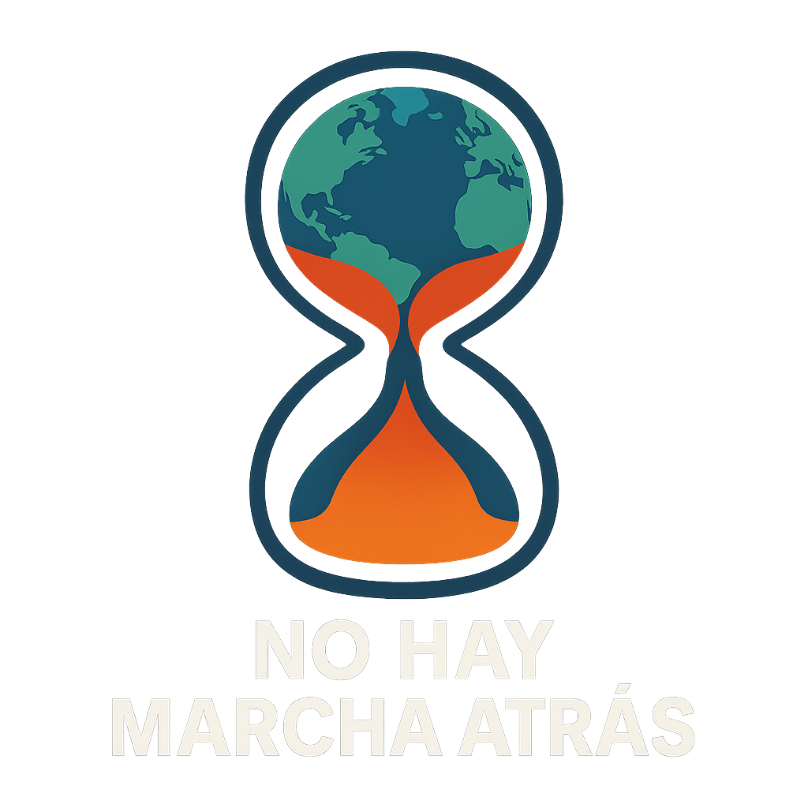

No hay marcha atrás
Explora las evidencias, los impactos, las causas y las formas de actuar ante el cambio climático.
Ver Novedades
Explora las evidencias, los impactos, las causas y las formas de actuar ante el cambio climático.
Ver Novedades